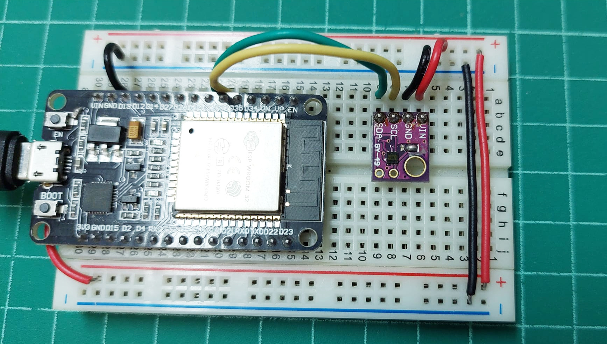

MAX44009 Ambient Ligiht Sensor Module#
▷ Maxim MAX44009#
ไอซี MAX44009 (Datasheet) ผลิตโดยบริษัท Maxim Integrated เป็นเซนเซอร์แสงที่ทำงานและให้เอาต์พุตแบบดิจิทัล (Digital Ambient Light Sensor) และสามารถวัดความเข้มแสงที่มองเห็นด้วยตาเปล่าได้ในสภาวะแวดล้อมโดยรอบ
คุณสมบัติของ MAX44009
- ทำงานได้โดยใช้พลังงานต่ำ (โดยทั่วไปแล้ว ปริมาณกระแสไฟฟ้าอยู่ในระดับต่ำกว่า 1μA)
- สามารถวัดค่าความเข้มแสงได้ในช่วง 0.045 Lux ถึง 188,000 Lux สำหรับความยาวคลื่นของแสงในช่วง 400nm ~ 700nm
- ใช้แรงดันไฟเลี้ยง (VCC) ในช่วง 1.7V ~ 3.6V
- ทำงานได้ในช่วงอุณหภูมิ -40 ~ +85 °C
- สื่อสารข้อมูลด้วยบัส I2C ความเร็วได้ถึง 400kHz
- มีขา A0 (Address Select) จำนวนหนึ่งขา (อินพุต)
- มีขา /INT (Active-Low) สำหรับการตั้งค่า Threadhold และเอาไว้เปรียบเทียบกับค่าที่วัดได้ สามารถเปิดการสร้างสัญญาณอินเทอร์รัพท์เป็นเอาต์พุตได้โดยอัตโนมัติ ตามเงื่อนไขการเปรียบเทียบค่า Threadhold
ภายใน MAX44009 มีวงจรที่ประกอบด้วยโฟโต้ไดโอด (Photodiode) และมีวงจรสำหรับการชดเชยหรือตัดส่วนที่เกิดจากอินฟราเรดออกไป (IR compensation / IR rejection)
เมื่อได้รับแสง จะทำให้เกิดกระแสไฟฟ้าไหลที่ตัวโฟโต้ไดโอด และนำไปผ่านวงจรแปลงกระแสให้เป็นแรงดันไฟฟ้า (OpAmp-based Current-to-Voltage Converter) แล้วแปลงสัญญาณแอนะล็อกให้เป็นข้อมูลดิจิทัล สำหรับการประมวลผลและสื่อสารข้อมูลผ่านบัส I2C ในลำดับถัดไป
รูป: Block Diagram ของไอซี MAX44009
การทำงานของ MAX44009 มีให้เลือกหลายโหมด ซึ่งขึ้นอยู่กับการตั้งค่าบิต Bit 7 CONTINUOUS และ Bit 6 MANUALในรีจิสเตอร์ Configuration Register (Address 0x02)
- Default Mode: เป็นโหมดการวัดค่าที่เกิดขึ้นซ้ำทุก ๆ 800 มิลวินาที
- Automatic Mode: เป็นโหมดการวัดค่าที่มีระยะเวลาในการวัดถูกเลือกโดยอัตโนมัติ (Integration time: TIM) อยู่ในช่วง 100 มิลลิวินาที ถึง 800 มิลลิวินาที ซึ่งขึ้นอยู่กับปริมาณแสงที่ได้รับในขณะทำการวัด
- Manual Mode: เป็นโหมดที่มีการเลือกระยะเวลาในการวัดได้ ตั้งแต่ 6.25 มิลลิวินาที ถึง 50 มิลลิวินาที
- Continuous Mode: เป็นโหมดการวัดต่อเนื่องซ้ำไปเรื่อย ๆ และเลือกระยะเวลาในการวัดได้
| Bit 7 CONTINUOUS | Bit 6 MANUAL | Description |
|---|---|---|
| 0 | 0 | Default, integration time 800 msec |
| 0 | 1 | Manual (one-shot), integration time selected by TIM[2:0] bits |
| 1 | 0 | Continuous, automatic integration time: 100 .. 800 msec |
| 1 | 1 | Continuous, manual integration time selected by TIM[2:0] bits |
รูป: รายการรีจิสเตอร์ที่มีอยู่ภายใน MAX44009 สำหรับการอ่านหรือเขียนข้อมูลไบต์ด้วยบัส I2C
รูป: การเลือกค่าบิตสำหรับ Integration Time (TIM)
รูป: การเขียนหรืออ่านหนึ่งไบต์ลงในรีจิสเตอร์ (Write or Read Register) ภายใน MAX44009
การเขียนค่าลงในรีจิสเตอร์ขนาดหนึ่งไบต์ มีลำดับดังนี้
- ไมโครคอนโทรลเลอร์เริ่มต้นด้วยการส่งสัญญาณเริ่มต้น (Start Signal: S)
- ส่งไบต์แอดเดรสของอุปกรณ์ + บิตสำหรับการเขียน (R/W Bit: 0) แล้วตรวจสอบบิต Acknowledge: A
- ส่งไบต์ข้อมูลที่ระบุแอดเดรสของรีจิสเตอร์ (Register Address) แล้วตรวจสอบบิต ACK จากอุปกรณ์
- ส่งไบต์ข้อมูล (Data Byte) ที่ต้องการเขียนลงในรีจิสเตอร์ดังกล่าว แล้วตรวจสอบบิต ACK จากอุปกรณ์
- จบท้ายด้วยการส่งสัญญาณจบ (Stop Signal: P)
การอ่านค่าลงในรีจิสเตอร์ขนาดหนึ่งไบต์
- เริ่มต้นด้วยการส่งสัญญาณเริ่มต้น (Start Signal: S)
- ส่งไบต์แอดเดรสของอุปกรณ์ + บิตสำหรับการอ่าน (R/W Bit: 1) แล้วตรวจสอบบิต Acknowledge: A จากอุปกรณ์
- ส่งไบต์ข้อมูลที่ระบุแอดเดรสของรีจิสเตอร์ (Register Address) แล้วตรวจสอบบิต ACK จากอุปกรณ์
- ส่งสัญญาณเริ่มต้นอีกครั้ง (Repeated Start: R) ข้อมูลที่ต้องการเขียนลงในรีจิสเตอร์ แล้วตรวจสอบบิต ACK จากอุปกรณ์
- อ่านข้อมูลหนึ่งไบต์ จากอุปกรณ์ แล้วส่ง No Ack (/A) ไปยังอุปกรณ์
- จบท้ายด้วยการส่งสัญญาณจบ (Stop Signal: P)

รูป: การอ่านข้อมูลไบต์จากรีจิสเตอร์ที่มีแอดเดรสต่างกัน (Register Address 1, 2) ตามลำดับ
▷ GY-49 Module#
เนื่องจากไอซี MAX44009 มีขนาดเล็ก จึงนิยมใช้โมดูล Breakout เช่น โมดูล GY-49
โมดูล GY-49 มี 4 ขา ได้แก่
| Pin | Description |
|---|---|
| VCC | Voltage Supply (+3.3V ~ +5V) |
| GND | Ground |
| SCL | I2C Clock |
| SDA | I2C Data |
ไอซี MAX44009 มีขา A0 (Address Select) ให้กำหนดค่าแอดเดรสของอุปกรณ์ได้เป็น 0x4A และ 0x4B) แต่โมดูล GY-49 ไม่มีขาสำหรับ ADDR แต่จะมี Solder Jumper
สำหรับบัดกรี เพื่อกำหนดค่าบิต (และมีค่า Default เป็น 0x4A)
รูป: โมดูล GY-49 จากมุมมองด้านที่มีไอซี 662K (3.3V LDO Voltage Regulator) และด้านที่รับแสงซึ่งมีไอซี MAX44009 และมีการบัดกรีตรงตำแหน่ง Solder Jumper เอาไว้
รูป: ผังวงจรของโมดูล GY-49 (Source: wiki.sunfounder.cc)
จากตัวอย่างผังวงจรจะเห็นได้ว่า โมดูล GY-49 มีไอซี MAX44009 และมีวงจร แปลงแรงดันไฟเลี้ยง (LDO Voltage Regulator เช่น ใช้ไอซี 622K) แปลงจากไฟเลี้ยง +5V ให้เป็น +3.3V และมีวงจรที่ทำหน้าที่แปลงระดับแรงดันลอจิก (Logic Level Shifter) โดยใช้ทรานซิสเตอร์แบบ MOSFET (ใช้ไอซีเบอร์ K27 / 702 / 2N7002KDW: Dual N-Channel MOSFET, SOT3-6-3)
ตัวอย่างไลบรารีสำหรับการเขียนโค้ดด้วย Arduino และ MicroPython และมีการแชร์ไว้ใน Github ได้แก่
▷ ตัวอย่างการเขียนโค้ด Arduino#
โค้ด Arduino Sketch สาธิตการอ่านค่าจากโมดูล GY-49 โดยการเชื่อมต่อระหว่างไมโครคอนโทรลเลอร์ Arduino Uno / Nano หรือ ESP32 ด้วยบัส I2C ความเร็ว 400kHz ถ้าใช้บอร์ด Arduino Nano ให้ใช้ขา A4 และ A5 สำหรับสัญญาณ SDA และ SCL ตามลำดับ แต่ถ้าเป็นบอร์ด ESP32 สามารถเลือกใช้ขาได้ตามความเหมาะสม
//-------------------------------------------------------------------
// Author: RSP @ KMUTNB
// Date: 2022-08-23
// Target: Arduino ESP32 or Uno/Nano
//-------------------------------------------------------------------
#include <Wire.h>
// Select I2C Pins for ESP32
#define I2C_SDA_PIN (33)
#define I2C_SCL_PIN (32)
// Note: For arduino Uno or Nano, use A4 and A5 pins for SDA and SCL.
// Set the I2C address for the MAX44009 device
#define MAX44009_ADDR (0x4a) // 0x4a or 0x4b
void setup() {
Serial.begin( 115200 );
#if defined(ESP32)
// set I2C Pins for ESP32
Serial.println( "Set I2C pins for ESP32" );
Wire.begin( I2C_SDA_PIN, I2C_SCL_PIN );
#else
Wire.begin();
#endif
Wire.setClock( 400000 ); // set I2C speed to 400kHz
Wire.beginTransmission( MAX44009_ADDR );
if ( Wire.endTransmission() > 0 ) {
Serial.println( "MAX44009 not found! [error]" );
} else {
Serial.println( "MAX44009 found! [ok]" );
}
}
void loop() {
float lux = -1.0;
if ( MAX44009_read( MAX44009_ADDR, &lux ) ) {
#if defined(ESP32)
Serial.printf( "Light: %.1f lx\n", lux );
#else
Serial.print( "Light: " );
Serial.print( lux, 1 ); // only 1 digit after the decimal point
Serial.println( " lx" );
#endif
} else {
Serial.println( "Sensor reading error!" );
}
}
bool MAX44009_read( uint8_t addr, float *lux ) {
uint8_t buf[2];
*lux = 0.0;
Wire.beginTransmission( addr );
Wire.write( 0x02 ); // select the configuration register
Wire.write( 0x44 ); // use manual mode, TIM[2:0]=0b100 (50 msec) or
//Wire.write( 0x80 ); // use automatic mode
if ( Wire.endTransmission() > 0 ) {
Serial.println( "No sensor response!" );
return false;
}
delay(800); // wait for 800 msec
uint8_t reg_addr[] = {0x03,0x04};
for ( int i=0; i < 2; i++ ) {
Wire.beginTransmission( addr );
Wire.write( reg_addr[i] ); // specify the register address
Wire.endTransmission( false ); // no stop, followed by repeated start
Wire.requestFrom( addr, 1 );
if ( Wire.available() == 1 ) {
buf[i] = Wire.read(); // data from the selected register
} else {
return false;
}
}
Wire.endTransmission();
// Convert the data to lux
int exponent = (buf[0] & 0xf0) >> 4; // 4-bit exponent (E)
int mantissa = ((buf[0] & 0x0f) << 4) | (buf[1] & 0x0f); // 8-bit mantissa (M)
*lux = (1UL << exponent) * mantissa * 0.045;
return true;
}
อีกตัวอย่างหนึ่งเป็นการสาธิตการใช้ไลบรารี Arduino MAX4409
โค้ดตัวอย่างการใช้ไลบรารี https://github.com/RobTillaart/Max44009/
#include <Wire.h>
#include "Max44009.h" // https://github.com/RobTillaart/Max44009/
Max44009 light( 0x4A );
void setup() {
Serial.begin( 115200 );
Wire.begin();
Wire.setClock( 400000 );
delay(100);
light.setAutomaticMode(); // use automatic mode
}
void loop() {
float lux = light.getLux();
if ( light.getError() ) {
Serial.println( "Sensor reading failed! [error]" );
}
else {
Serial.print( "Light: " );
Serial.print( lux, 1 );
Serial.println( " lx" );
}
delay(1000);
}
รูป: การต่อวงจรทดลองโดยใช้บอร์ดไมโครคอนโทรลเลอร์ Arduino Nano (5V)

รูป: การต่อวงจรทดลองโดยใช้บอร์ดไมโครคอนโทรลเลอร์ ESP32 (3.3V)
▷ กล่าวสรุป#
บทความนี้ได้นำเสนอการใช้งานโมดูลที่มีไอซี MAX44009 ซึ่งเป็นเซนเซอร์แบบดิจิทัลสำหรับการวัดความเข้มแสงในสภาวะแวดล้อมโดยรอบ โดยนำมาทดลองใช้งานร่วมกับบอร์ดไมโครคอนโทรลเลอร์ ESP32 และ Arduino Nano และเขียนโปรแกรมด้วย Arduino IDE
This work is licensed under a Creative Commons Attribution-ShareAlike 4.0 International License.
Created: 2022-08-23 | Last Updated: 2022-08-24